Version History
All the details about the JLR mod updates.
JLR Alpha 22
December 1, 2024 by Chris
We are almost at our destination of full team customisation!
This release introduces the ability to create new players and teams.
Now, you’re not limited to just editing existing players and teams—you can build entirely new lineups.
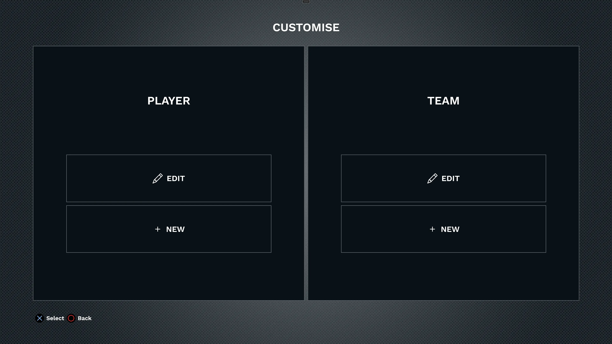Create your own local club team including all your mates, create a fantasy team or simply add yourself to your favourite club or national team.
New Features:
- New Player Creation: You can now create brand-new players. The player is saved to your saves folder in a simple json format and can be copied between PCs or versions.
- New Team Creation: Build your own team from the ground up.
- Each team has a unique ID and is saved to your saves folder in a simple json format and can be copied between PCs or versions.
Updates:
- Teams: Updated International team ratings following the latest Test matches.
JLR Alpha 21
November 1, 2024 by Chris
Customisation keeps getting better. This month I'm adding the ability to edit players.

Player Customisation
Edit any regular player in the game
- Modify core attributes
- Country of origin: Affects international eligibility
- Primary position: Influences specific ratings
- Overall player rating
- Physical characteristics
- Height
- Weight
- Appearance
- Skin colour
- Hair colour
- Changes saved to json files and can be edited outside of the game.
- Edits preserved between sessions
- Ratings update based on position changes
- Changes saved to json files and can be edited outside of the game.
- Compatible with previous customisation features
- Edits exportable between game versions
- Changes reflect immediately in-game
This update builds on our previous customization features (team selection, kit editing) to give you even more control over your rugby experience. All player edits are saved alongside your team customisations in the Saves folder.
JLR Alpha 20
October 1, 2024 by Chris
Our march towards full team customisation continues. This months release let's you change the players in any team. I also now show player rating information to allow you to make more informed decisions.
This feature was requested by patron François. Thanks!

Select Players ✅
- You can select different players to be in any regular team. (A regular team is one that was not in the original game or a historical or fantasy team.)
- Edits are saved in the Saves folder and can be moved to new releases or edited outside of the game.

Player Ratings üíØ
- The player selection and switch screens now show overall player ratings, height, weight and one key stat.
- The key stat shown is what is key for their position e.g. strength rating for Props, Halfbacks their pass and so on.
- A player's overall rating will change if you change their position.

Special Note
As you know player ratings are both contentious and very subjective, it is almost impossible to manually assign ratings to over a thousand players (this is my side gig!). This means there will definitely be player ratings you disagree with, I am open to constructive feedback however, and will consider modifying ratings for the next release.
JLR Alpha 19
September 1, 2024 by Chris
We are continuing our journey towards customisable teams in JLR. This release brings the ability to create and edit the team kits!
Kit Customisation
- Change the colours of any part of the jersey, shorts or socks that the game supports.
- Use the colour picker or hex code to get the exact colours you want.
- Add as many kits as you like to each team.
- Edits are saved in a simple json format which allows you to edit them outside of the game too.
Player Pacific Nations Cup
The new Pacific Nations Cup format was launched this month. They now have 2 pools of 3 and come together for a semi final and final. This has been added to the mod. Find it under Tournaments > Global.
- Pool A
- Fiji
- Samoa
- Tonga
- Pool B
- Canada
- Japan
- USA
- Playoffs
- Semi final
- Final
Bug fix
The "Random" option for stadium, weather, or wind settings now correctly randomises each time you move to the start match screen, instead of only randomising once when the settings are saved.
JLR Alpha 18
August 1, 2024 by Chris
This month's release brings you the latest in international rugby.
Updated Test Lineups
I've refreshed all Tier 1 nation lineups to reflect the current state of international rugby after the 2024 Six Nations and mid-year internationals.
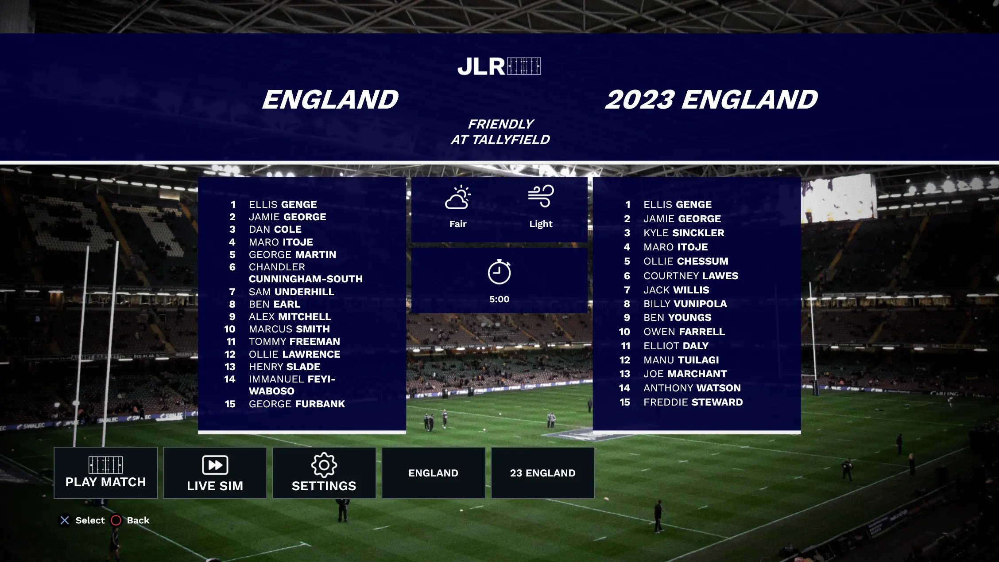 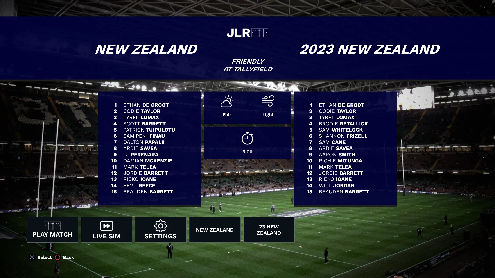New Tournament: Random World Cup üèÜ
Keep it fresh with a new tournament option!
- Play a World Cup with a randomised draw
- Uses current team lineups and ratings
2023 World Cup Teams Preserved
For those who want to relive the 2023 Rugby World Cup:
- All 2023 World Cup teams are still available in the "2023 World Cup Tournament" and "Friendlies" modes
- These teams retain their end-of-World Cup ratings
JLR Alpha 17
July 1, 2024 by Chris
This month's release introduces international team selection!
International Team Selection
Now you can choose your ideal lineup for international teams, selecting from all eligible players in the game.
In previous versions, international teams had fixed lineups. Now, you can to create your own team from a pool of all eligible players.
- Select players from any club team in the game
- Build your ideal starting XV
- Experiment with different combination
Player Eligibility
Players are eligible for each Test Team based on their nationality in the game.
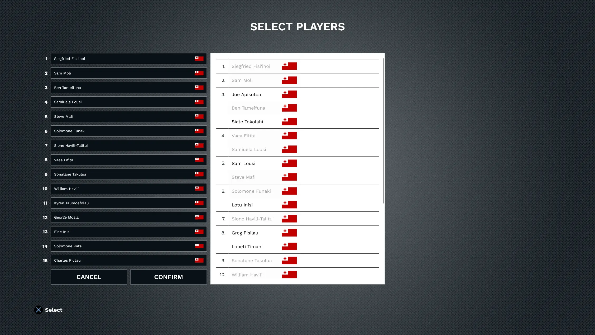Save & Load
Your custom international line-ups are saved automatically with your game progress.
JLR Alpha 16
June 1, 2024 by Chris
This month's release shows you the selected player on the screen.
Overview
In the original game, New Zealand was clearly the best regular team. But the next best team was up for debate. According to the stats in the game code, Australia is 2nd, England 3rd and South Africa 4th with France rounding out the top 5.
However, in reality South Africa could actually be better to play as due to the fact that they had Chester Williams on the left wing.
Left wing is the main strike player in every team (I detail that here) and Chester Williams was easy to identify because he had different skin colour to the rest of the team. This made it easy to know who to pass to.
This is all due to one of the few aspects of Jonah Lomu Rugby that it was worse than other games, the UI would not show you who had the ball.
I've fixed this in the mod! It now shows at the bottom of the screen which player is selected from each team and their position number.
This makes it much easier to use the best players for the job and allows you to concentrate on gameplay rather than worrying about figuring out who is who.
 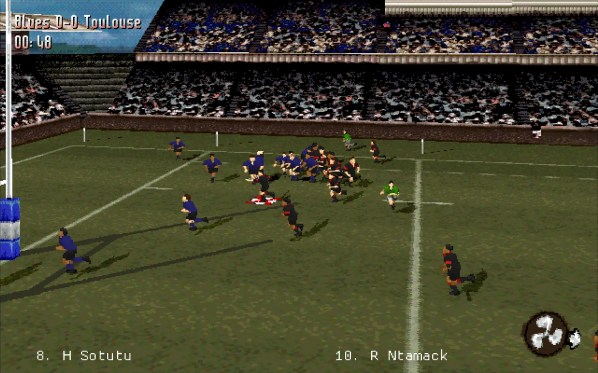
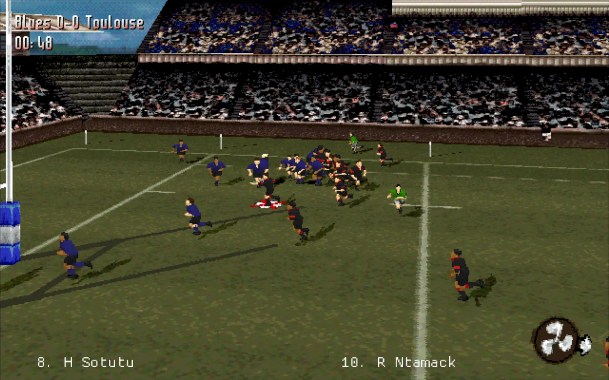Performance Setting
Reading the game memory to retrieve the selected player can slow down the games frame rate a small amount on slower PCs.
Because of this I have added a setting to reduce the load on the PC (High, Medium or Low) or to turn the feature off completely.
This setting reduces how often the selected player is retrieved resulting in better performance but a larger delay in the name appearing on screen.
JLR Alpha 15
May 1, 2024 by Chris
This month's release introduces Tours!
Starting with British and Irish Lions ü¶Å
We are starting with a British and Irish Lions Tour of New Zealand. More tours will be added next time. Let me know, which tours you want added! Contact
Tour
Play an entire Tour of a country including matches against Clubs and a 3 Test series.
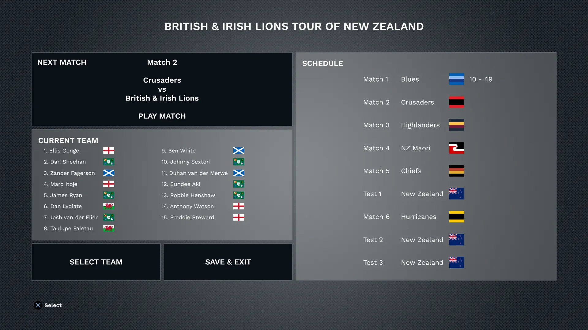Team Selection
Select your starting lineup at the start of the tour and at anytime throughout the tour.
Select from a set of eligible players.
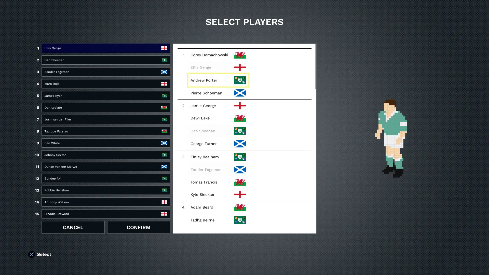Save & Load
Save a tour to view or continue later, on the current or new device.
JLR Alpha 14
April 1, 2024 by Chris
This month's release is updating the old and starting something new...
Updated Teams
With all Tier 1 club teams in the game, I'm now focussed on keeping the lineups up-to-date and current. Two of the most out of date teams were Super Rugby and the English Premiership.
I've updated all 26 of those teams to their new starting lineups and added new kit colours for 2024.
I have kept their old kits around if you prefer those too.
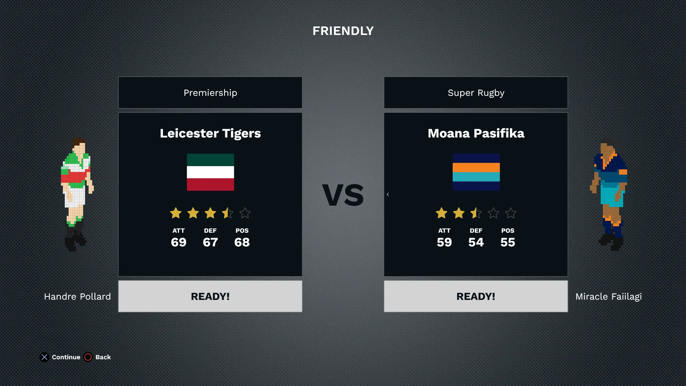Edit Teams
I am also starting the journey to let you edit and create content for the game. We are starting out with basic team editing, which means you can change the existing teams Name, Country of origin, Category and menu accent colour.
I understand that player lineup and kit colour editing are the most important aspects of editing a team. So I'll be working on those soon.
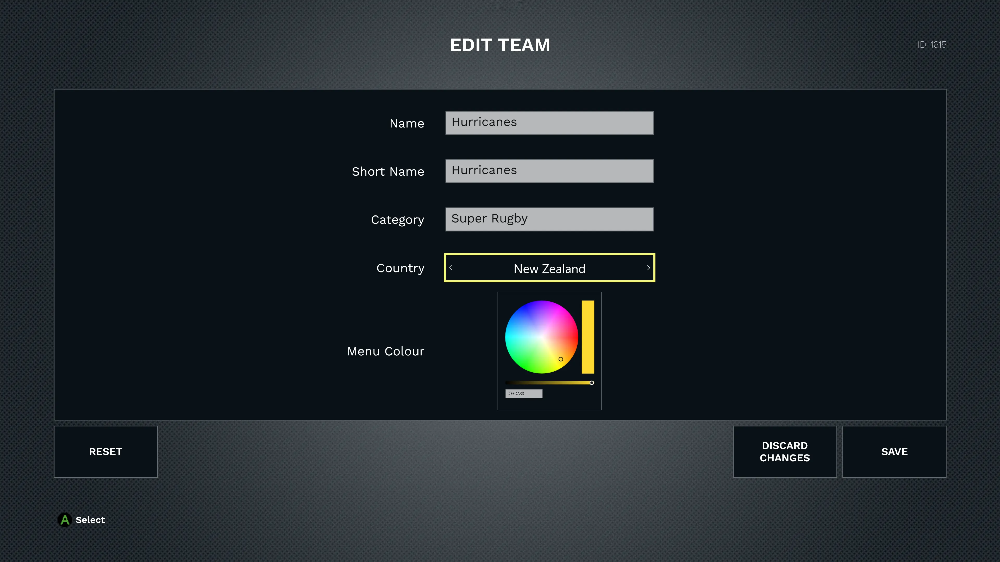Controller Setting
Finally, I have added the ability to turn off built in controller support. This is useful for those who want to use their own controller mapping software to configure their own button layouts.
JLR Alpha 13
March 1, 2024 by Chris
This release brings 7 new Tournaments.
Tournaments üèÜ
- 4 Pools of 5 teams
- Quarter finals, Semi finals, Final.
- 5 teams
- 4 rounds, Qualifying final, Final
- 5 teams
- 4 rounds, Final
Territories Cup
- 4 teams
- 4 teams
- 4 teams
- 4 teams
JLR Alpha 12
February 1, 2024 by Chris
United Rugby Championship!!
The biggest Tier 1 club competition is in full swing, and now you can play it in Jonah Lomu Rugby too.

New teams üëï
Tournament üèÜ
JLR Alpha 11
January 1, 2024 by Chris
Bonjour and Happy New Year!
This month brings the French Top 14 to Jonah Lomu Rugby.

New teams
Tournament üèÜ
Top 14!
Changed bonus point system to also support getting a Loss Bonus Point for a margin of only 5 or less.
Changed bonus point system to also support getting a Try bonus point for scoring 3 more tries than your opponent.
Changed playoff system to support 6 teams in the playoffs. The top 2 teams get a Bye in the first round of the playoffs.

Game Launcher Improvements
Updated the Launcher to support a new file.
Updated the Launcher to look for the file in the Downloads folder and automatically load it if found.
JLR Alpha 10
December 1, 2023 by Chris
This month's release is the all-new Territories Cup! Read on to see all the details.
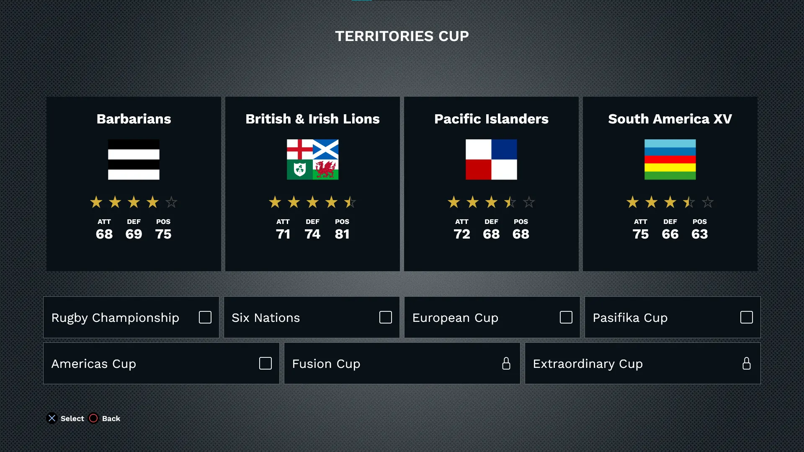Fusion Cup.
Americas Cup.
European Cup.
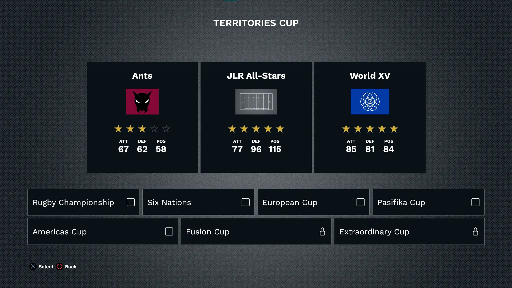Extraordinary Cup.
New Territories Cups üèÜ
In addition to the 6 Nations and Rugby Championship, I've added European Cup, Americas Cup and Pasifika Cup.
Now, just like the original game, you need to win all the Territories Cups to unlock two special tournaments, which I'm calling the Fusion Cup and the Extraordinary Cup.
The Fusion Cup is contested by teams made up of players from multiple countries: the B&I Lions, Barbarians, Pacific Islanders and South American XV.
The Extraordinary Cup, like the original game has a few fictional teams along with the World XV.
New teams üåç
Available right away:
Unlockable:
Unlockables
Winning the Fusion or Extraordinary Cup with a team will unlock that team for use in Friendlies.
Features
Added a trophy icon every time you win a Territories Cup.
JLR Alpha 9
November 1, 2023 by Chris
Congratulations South Africa, World Cup Champions for the 4th time! üéâ
We are celebrating the end of the World Cup by adding all of the World Cup Champions to JLR!
New Champions Tournament üèÜ
Celebrate the World Cup champions by participating in an epic Champions Tournament.
Take part in a round-robin competition, Semi finals & Final
New teams üåç
10 new teams that have made their mark in World Cup history, including the latest 2023 champions, South Africa.
Unlockables
Winning the Champions Tournament with a team will unlock that team for use in Friendlies.
JLR Alpha 8
October 1, 2023 by Chris
After 2 months of adding teams and tournaments, this month I am back to adding features.
The focus of this release is Management.
Game management
I'm bringing Live Sim to JLR! This is a feature I've been wanting to build for a long time.
Live sim means that you can simulate a game while watching the progress. At any point in the 2nd half you can choose to take over control of the game, and influence the end of the match. You can pause and manually progress the Sim. The live Sim shows the result of each phase and which player scored. It also shows possession stats as the game progresses.
Live Sim screen.
Team management
Want to move Ardie Savea back to 7? Do you think Robbie Henshaw is better at inside centre?
Now you can select which position the players play.
E.g. if you put a prop on the wing their ratings will drop significantly due to their lack of speed.
There's nothing stopping you though!
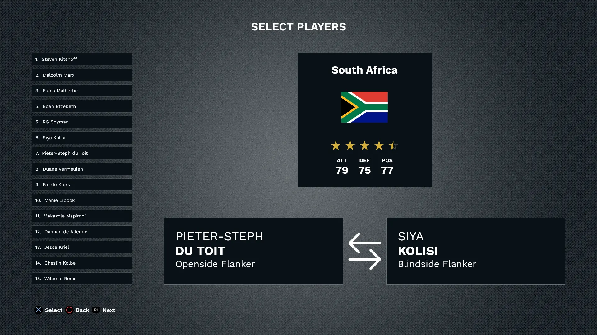Select players screen.
JLR Alpha 7
September 3, 2023 by Chris
The World Cup release!
It's September and the World Cup is right around the corner and now you can play it in JLR!
This release has a massive, 24 new teams!
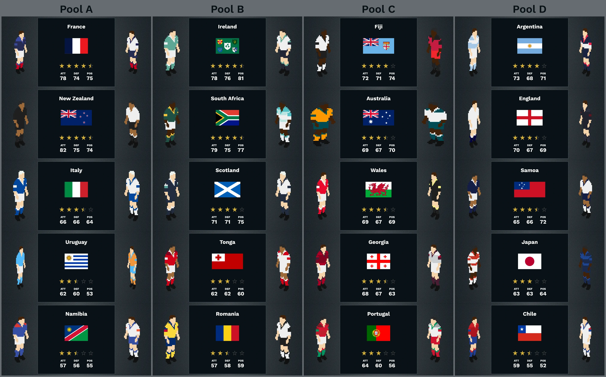World Cup teams.
Release Notes:
New teams
All teams have both home and away jerseys.
I also updated the Tier 1 teams to their World Cup squads.
Added 14 Auckland Club rugby teams. (Thank you Brad R for all your help!)
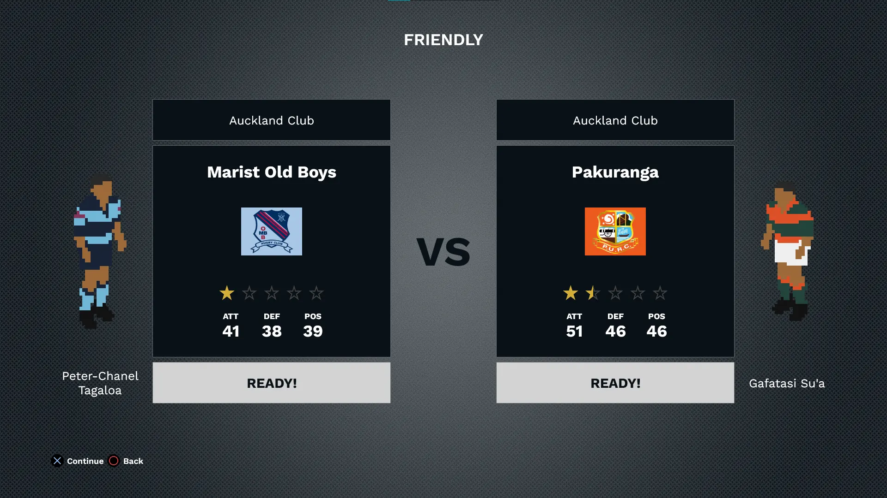Club team select screen.
New Tournaments
Unlocks
Winning the 2023 World Cup unlocks the 2015 World Cup winning NZ team.
JLR Alpha 6
August 1, 2023 by Chris
The International release!
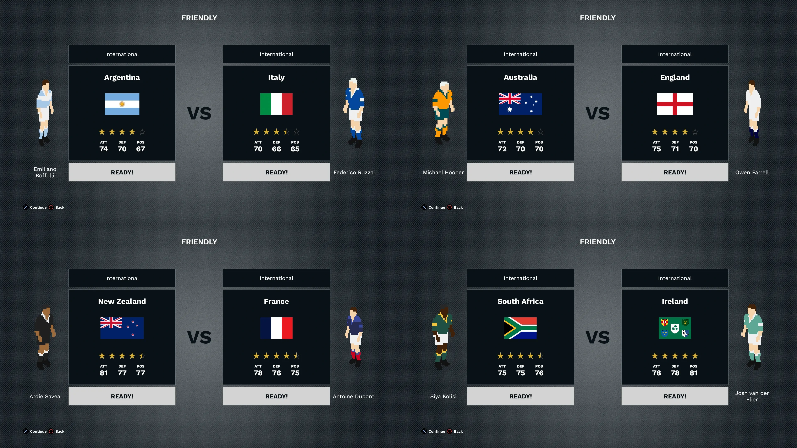International team select screens.
Release Notes:
New teams
New Territories Cups
JLR Alpha 5
July 1, 2023 by Chris
It's that time again! In this new version I have focussed on Territories Cup mode and unlockables.
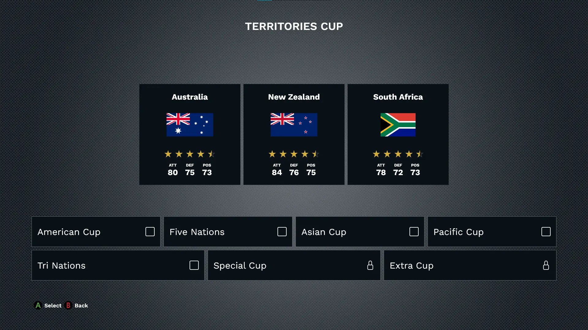Territories Cup screen.
Release Notes:
Territories Cup
Added all Original Territories Cup tournaments.
Added a selection of new Derby Cup tournaments.
Unlocks
Save and load
JLR Alpha 4
June 1, 2023 by Chris
The new feature in this release is Classic Matches!
Release Notes:
New teams
Classic Match
Classic match screen.
JLR Alpha 3
May 1, 2023 by Chris
The focus of this release has been Tournaments! üèÜüèÜüèÜüèÜ
Release Notes:
Tournaments üèÜ
- 11 teams
- Semifinals & Final
- 2 pools of 7 teams each.
- Quarterfinals, Semis & Final.
- 4 pools of 4 teams
- Quarterfinals, Semis & Final.
New teams
Tournament overview screen.
JLR Alpha 2
April 1, 2023 by Chris
The focus of this release has been the controllers üéÆüéÆ.
Release Notes:
Local Multiplayer
Controller
New teams
New player select screen.
JLR Alpha 1
March 1, 2023 by Chris
The first release of the JLR mod. This is an exciting day for me. Hopefully for you too.
Because this is a mod and not a new game, it preserves what made the game great: the beloved commentary and the fast and simple gameplay. While enhancing a few features that were stuck in 1997: the ability to play on modern PCs, the teams, players and the limited menu system.
Release Notes:
Key features:
New team select screen.